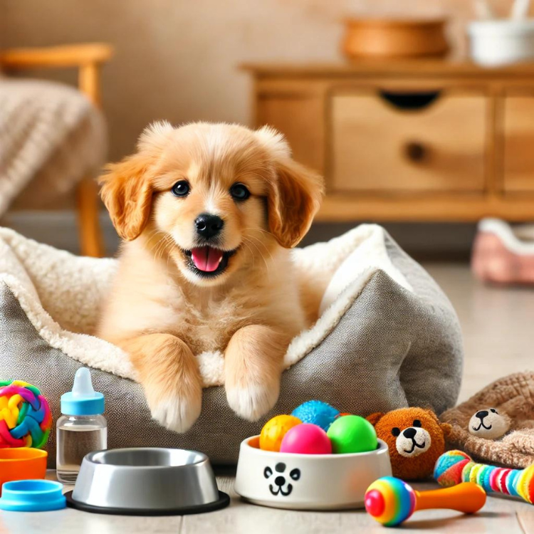

FurryTails|Essential Guide for Taking Care of Puppies: Tips and Product Recommendations for New Dog Owner

Introduction
Puppies are irresistibly cute and endearing, making many people want to start raising them from a young age. However, like newborn babies, puppies are delicate, adorable, but also very fragile. Without careful attention, they can easily fall ill, which can affect their future health. In this guide, we will introduce important care tips and product recommendations specifically for first-time dog owners raising very young puppies.
Nursing Period (Birth to 1 Month)
Newborn puppies require a lot of effort for feeding, assisting with excretion, and monitoring their health. Puppies in the nursing period are extremely fragile, especially those without access to their mother’s milk, and require special attention to their nutritional intake.
1. What Should Nursing Puppies Eat? Can They Drink Cow’s Milk?
- The best food for puppies is their mother’s milk, which provides rich protein, fat, and antibodies to help strengthen their immune system. If mother’s milk is not available, special formula milk is a good alternative.
- Special Formula Milk: Designed specifically for puppies, it is easy to digest and absorb, preventing diarrhea and ensuring proper nutrition.
2. Feeding Techniques for Puppies Under One Month
- Puppies need approximately 180 ml/kg of milk per day, divided equally into each meal.
- When feeding, position the puppy face down with its head slightly raised. Use a bottle with a small hole in the nipple to dispense milk drop by drop, preventing choking.
3. Assisting Puppies with Urination and Defecation
- Puppies up to three weeks old need their mother to lick their genital area to stimulate urination and defecation. In the absence of their mother, use a clean tissue dipped in warm water to gently wipe their anus and urethra.
Weaning Period (1 to 2 Months)
At around one month old, puppies start teething and can gradually transition to solid food.
1. Recommended Weaning Foods
- Meat Paste: Soft texture, suitable for mixing with formula milk for easy licking.
- Soaked Dry Food: Choose high-protein, low-carb main food for easy digestion.
- Puppy Main Food Cans: Mixed with milk, nutritious, and easy for puppies to lick.
2. Weaning Transition Guide
- Start by adding a small amount of weaning food to the formula milk, gradually increasing the proportion until the weaning food completely replaces the original diet. If digestive issues occur, reduce the amount of weaning food.
3. eworming and Vaccination
- Consult a veterinarian for deworming puppies at about 2-3 weeks old. Some deworming products can be used from two months old.
- The first set of basic vaccinations is given around 6-9 weeks old, followed by booster shots every 2-4 weeks, with the final dose after 16 weeks.
Growth Period (3 to 9 Months)
This is the stage where puppies go through teething and rapid growth.
1. Puppy Teething Period
- From around three months, puppies’ baby teeth will start to fall out, and permanent teeth will grow. Provide durable chew toys to alleviate teething discomfort.
- Recommended Chew Toys: Choose sizes that are not easily swallowed, made from durable, safe, and natural materials, such as undecorated plush toys and dedicated chew sticks.
2. Puppy Diet Guide
- This stage requires ample nutrition to help the development of body tissues and systems. Choose specially formulated puppy food, such as puppy kibble and main food cans.
3. Common Diet Misconceptions
- Homemade Fresh Food: Improper nutritional balance can lead to deficiencies. Opt for commercially prepared food with balanced nutrition.
- Calcium Supplementation: Excessive calcium can cause joint problems. Ensure the calcium ratio meets the puppy’s needs.
Product Recommendations for New Dog Owners
Here are selected products from Amazon to assist in your decision-making. Links may contain affiliate marketing programs, where clicking and purchasing may generate a small commission for us (at no additional cost to you), helping maintain our website operations.
Raising a puppy involves some essential products to make the care process easier:
- Recommended Product: Hubulk Pet Dog Bowls
- Features: Made from stainless steel or ceramic, with a non-slip base, safe food-grade materials, and a double bowl design for separating food and water.
High-Quality Puppy Food
- Choose high-quality food that meets your puppy’s nutritional needs. Consult your veterinarian or pet store expert for brand recommendations.
- Recommended Product: Small Calming Dogs Bed
- Features: Made from soft, comfortable faux fur, provides deep sleep, suitable for small dogs, and machine washable for easy cleaning.
- Recommended Product: IRIS USA Dog Playpen
- Features: Made from durable heavy-duty molded plastic, suitable for indoor and outdoor use, built-in door for easy access, and easy to assemble.
Leash and Collar
- Although puppies are suited for leashes and collars, it’s best to avoid outdoor walks until they have completed basic vaccinations. When going out, choose suitable leashes and collars, ensuring they are made from safe and comfortable materials.
- Recommended Product: Amazon Basics Dog and Puppy Pee Pads
- Features: Includes 150 regular-sized standard absorbency pads, ideal for puppy training, senior dogs, car trips, and more. Features multi-layer construction, quick-dry surface, and absorbent core that turns liquid into gel, with a leak-proof design and built-in attractant to aid in potty training.
- Recommended Product: Original Snuggle Puppy Heartbeat Stuffed Toy for Dogs
- Features: Durable, safe, hypoallergenic materials, machine washable, built-in heartbeat device to reduce anxiety and stress, mimics the comfort of a mother.
- Recommended Product: KONG Puppy - Natural Teething Rubber Chew Toy for Dogs
- Features: Made from soft puppy rubber, gentle on baby teeth, provides appropriate chewing enrichment. Bouncy for fetch games, doubles as a gentle chew toy, can be stuffed with treats to entice playtime, and helps with crate training.
Conclusion
Bringing a new puppy home is an exciting and rewarding experience. However, ensuring your puppy feels comfortable and safe is crucial. By understanding the care needs at different growth stages and choosing the right products, new dog owners can better care for their puppies, allowing them to grow healthy and happy.
Want to gain a deeper understanding of dog behavior and how to care for them? Click the link below to read more related articles. read more related articles